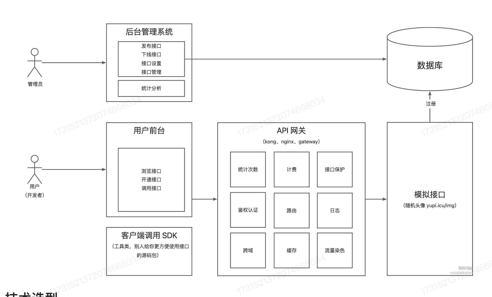

API开放平台
项目介绍
背景 :
- 前端开发需要调用后台接口
- 使用现成的系统的功能
做一个 API 接口平台:
- 防止攻击（安全性）
- 不能随便调用 (限制、开通)
- 统计调用次数
- 计费
- 流量保护
- API接入
做一个提供API接口调用的平台:
用户 :
用户可以注册登陆，开通接口调用权限，用户可以使用接口
管理员 :
可以对用户进行管理，可以对接口进行管理（发布/下线接口），可以对接口进行监控、以及可视化调用情况、数据统计。
业务流程

三个子系统 :
-
接口后台管理系统
-
前台用户管理系统
- 接口文档
- 在线调试
-
提供接口的系统
-
API 网关
- 统计次数
- 流量计费
- 接口保护
- 鉴权
- 日志
- 跨域
Kong、nginx、gateway...
-
第三方调用的 SDK
技术选型
-
前端 :
- React
- Ant Design Pro
- Umi
- Umi Request(Axios的封装)
-
后端 :
- Spring Boot
- 做一个SDK
- 网关实现?
计划
Part1 :
- 项目设计、选型
- 基础项目的搭建
- 接口管理
- 用户查看接口
Part2 :
- 接口调用
- 接口文档展示、接口在线调用
- 保证调用的安全性 (API 签名认证)
Part3 :
- 统计用户调用次数
- 限流
- 计费
- 日志
- 开通
需求分析
- 管理员可以进行接口的增删改查
- 用户可以访问前台，查看接口文档
项目脚手架
基础功能
开发调用的接口
因为我们已经成功的开发了接口，但是不能让用户每次都在浏览器地址栏中输入接口地址来调用它。这个时候就要考虑调用者怎么进行调用？
-
通过前端调用
-
通过后端调用
通过安全考虑，我们基本上都选择利用后端调用第三方的API.这样就可以保证我们的接口地址不会泄露。
HTTP调用
- HttpClient
- RestTemplate
- 第三方库(OKHTTP,Hutool)
我们创建了 Client 包，目的是负责与用户进行交互，处理用户请求，以及调用服务端提供的API接口等任务的实现。
讲讲 API 签名认证？
想一个很现实的问题，比如我们的接口最多同时允许100个人进行访问，资源是有限的。因此我们就需要尽可能的保护接口资源。因为如果遇到了恶意攻击可能会侵占我们的服务器资源，所以我们必须为接口设置保护信息。比如限制用户的接口每秒访问上限次数（实施请求的频次限额控制）。这样就可以保护我们的服务器资源。
这里就有一个很自然的想法就是 我们要确定到底是谁调用了我们的接口？这个是比较关键的。也就是 鉴权，举个简单的例子，管理员如果要下线某个接口，那么我们就需要进行管理员的相关验证？
-> 把问题转化 我们应该如何获取用户信息？
- 假设我是前端，我直接发起请求，没有登陆的操作，没有输入帐号和密码，那么我们怎么知道是谁在调用我们的接口？这里就引入了API签名认证的概念。
API 签名调用的过程
- Step1 : 签发签名
- Step2 : 使用签名/校验签名
那么比较自然的想法就是，让每次的调用请求都带上两个东西 accessKey 和 secretKey 从而可以实现无状态的请求。这样即使你之前没有来过，只要这次状态正确即可。
与 Token / Session 的区别就是 二者的强调点有很大的不同: API 签名认证 强调的是 防止篡改请求/请求完整性 而后者更强调的是身份的认证
API 签名设计是一个比较开放的问题，会涉及以下的问题:
AccessKeySecretKey用户请求参数signrandom value防止重放攻击timestamp校验时间戳是否过期
开发简单的SDK
开发者只需要关心调用哪些接口，传递哪些参数，就跟调用自己的项目一样简单
SDK 的具体设计过程
首先，我们要明确客户端设计的SDK需求与定位，避免过于繁琐的设计
-
引入相关的依赖，这些依赖是我们需要设计的SDK的基础，有两个依赖是我们必须引入的:
-
spring-boot-configuration-processor: 用于处理配置文件 -
spring-boot-autoconfigure: 用于自动配置这个模块的作用是根据项目的类路径
（classpath）和配置文件（如 application.properties 或 application.yml）中的信息，自动配置Spring应用所需要的各种组件和功能，而不需要开发者手动进行大量的配置。 简而言之就是SDK可以通过我们用户的配置文件来自动的生成Bean对象。我在
API平台设计中，设计了一个 SDK，就以secretKey和accessKey为两个配置参数，然后就可以通过这个两个参数的设置，可以自动的配置一个Bean对象。我们在引入依赖的时候，只需要引入这两个依赖，然后在配置文件中配置好secretKey和accessKey就可以自动的生成一个Bean对象。然后通过@Resource这个注解就可以注入这个Bean对象，然后就可以调用这个Bean对象的方法了。 -
编写配置类，用于创建一个客户端Bean对象。并且给
Bean对象添加上@ConfigurationProperties(prefix = "api")注解，用于自动的从配置文件中读取配置。 -
注册配置类，我们在
META-INF的目录下创建一个spring.factories文件，然后在这个文件中添加我们的配置类的路径，这样就可以自动的注册我们的配置类了。这里用到了工厂模式。就是知道后面的配置文件中可以自动的注册我们已经写好的配置类。 -
开发业务代码
- 使用
mvn install打包SDK - 在项目中引入SDK，即可使用
pom.xml 文件中的 build 标签的作用
<build></build> 中包含的就是Maven在执行各种任务(如编译、打包、测试)的核心。就比如
1 2 3 4 5 6 7 8 9 10 11 12 13 | |
maven-compile-plugin 用于编译Java代码，配置maven-jar-plugin用于打包JAR文件。
第三期 :接口上线和下线的功能
- 管理员 ： 可以对接口进行上线和下线的操作
- 用户在前端可以 浏览接口、查看接口相关的文档、在线调试接口的功能、申请签名
- 统计用户调用接口次数
- 优化系统 - API 网关
后台接口:
发布接口: (仅管理员可操作)
- 校验这个接口是否存在
- 判断这个接口是否可以调用
- 修改接口的状态 -> 1
下线接口: (仅管理员可操作)
- 校验这个接口是否存在
- 下线这个接口 -> 修改状态为 2
第4期 : 用户接口关系
设计表
这个是用户和接口的多对多关系
id主键 longuserId用户Id longinterfaceId接口Id longcreate_time创建时间 current_timestampupdate_time更新时间 current_timestampis_delete是否删除 tinyintnumber调用次数 intleft_num剩余调用次数 intstatus状态 0-正常 1-禁用 tinyint
网关
可以简单的理解为火车站，进行统一的检票，对于不同的车厢而言
我们这里的网关其实也是，又有点类似代理，用户在调用接口的时候，不用考虑是哪个项目团队进行调用，只需要通过网关进行调用即可。会由网关来帮助他进行处理，获得结果。
网关的应用场景
-
路由
转发的作用，比如有接口A 和 接口B 网关会记录这样的信息，根据用户访问的地址和参数，转发请求到对应的接口;
-
鉴权
统一鉴权，无论访问什么接口，都需要鉴权。我们直接把业务逻辑中抽离出来了 3. 跨域
统一处理跨域的问题
-
缓存
统一的业务处理，每个接口中都要做的通用逻辑，放到上层的网关中进行处理
-
流量染色
区分用户的来源，防止绕过网关进行访问
给每个请求加上一个标记，这个标记就是染色，分配一个 traceID
-
统一业务场景
-
访问控制
黑白名单，限制 DDOS ip攻击
-
负载均衡
在路由的基础上，跨域转发到某台服务器上
-
发布控制
灰度发布控制 给新接口分配 一部分的流量，等发现稳定了之后，才会慢慢的覆盖
-
接口保护
- 限制请求
- 信息脱敏
- 降级（熔断）
- 限流
-
统一日志
统一日志记录，方便后期的分析;
-
统一文档
将下游的项目文档进行聚合;
网关的分类
-
业务网关（微服务网关）
将请求转发到不同的项目业务,请求业务逻辑
-
全局网关
可能没有那么多的业务逻辑，进行负载均衡，流量控制等
实现
-
全局网关 Nginx 和 Kong(API网关)
-
业务网关 Spring Cloud Gateway，取代了 Zuul 性能高，用Java来实现
两种配置方式:
- 编程式:
- 配置式: